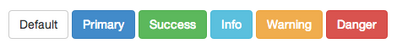
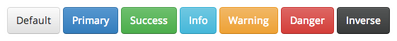

There's a reason that Bootstrap 3 has ugly buttons
It's true. Everyone loves Bootstrap's buttons...at least they did until 3.0 came out.
But before you get upset at @mdo and @fat for what many mistake to be a move towards the anti-skeuomorphic design trend, you should realize there's more than meets the eye behind the decision to make buttons flat and "ugly" in Bootstrap 3.

As Mark Otto stated on GitHub while Bootstrap 3 was under development:
Gradients and other embellishments have temporarily been removed while I focus on other things. It has nothing to do with skeuomorphism or anything like that.
There were plenty of follow ups, both for and against the flat, gradient-less buttons. Unfortunately, what a lot of folks don't realize is that Bootstrap is intended to be a starting point for their projects, not an end-all solution for front-end development. In other words, Bootstrap is supposed to be customized, and adding gradients and other arbitrary styles to the core simply makes that harder to do.
Aside from that, when things look too good out-of-the-box, people tend to leave them that way. We saw that so much with Bootstrap 2.x that it spawned blog posts imploring people to stop using Bootstrap (or at least start using it right).
Ultimately, Bootstrap 3 encourages people to customize their implementation, and that's a good thing.
A Less Mixin' for Prettier Buttons #
If you long for the good ol' days of beautiful Bootstrap buttons, I may have a solution that you'll like. It's a Less mixin' for buttons, designed specifically for Bootstrap 3. It's easy to use and customize. Use it in conjunction with Bootstrap's Less files and you'll have nice, customized buttons with minimal effort. Here's a sample:

This mixin' works in conjunction with default Bootstrap 3 styles, so you can change pretty much anything with ease. Consider this Gist a public domain offering, and use it however you like.